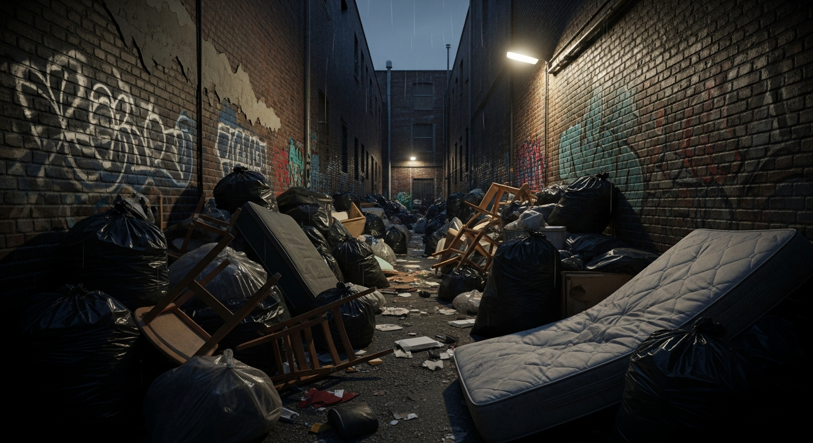
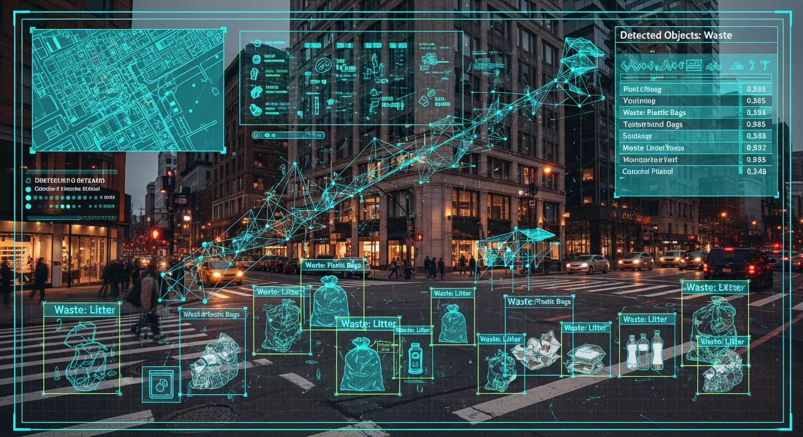

DumpGuard AI detects illegal dumping in real‑time using AI vision, smart cameras, and automated alerts for authorities.
Explore System →Illegal dumping isn't just an eyesore — it's a systemic failure costing billions.

DETECTED HAZARD — Unregulated Dumpsite
💲 Economic Drain: Cities spend $500M+ annually on cleanup.
⚠️ Public Health Hazard: Waste spreads disease & fire risk.
🌱 Environmental Decay: Toxic runoff damages ecosystems.
Advanced vision intelligence that understands urban waste in real time
Identifies specific waste types such as furniture, garbage bags, and tires with up to 95% precision, even in dense city environments.
Notifies municipal authorities within seconds of a confirmed illegal dumping event.
Uses historical dumping data to forecast when and where dumping is likely to occur.
Automatic face and license plate blurring happens on-device before any footage is uploaded.

AI vision detecting multiple waste objects across an urban street scene
End‑to‑end smart waste control
Simulated AI detection and predictive hotspot map
No illegal dumping detected yet
Red zones indicate high-risk dumping areas
DumpGuard AI supports the United Nations Sustainable Development Goals through technology-driven urban governance.
Enables cleaner, safer urban environments by monitoring and preventing illegal waste disposal in real time.
Reduces public exposure to hazardous waste, lowering health risks associated with unmanaged dumping.
Encourages responsible waste handling by increasing accountability and visibility in waste management systems.
Supports climate action by minimizing landfill overflow and uncontrolled waste emissions.
A clear, phased plan from prototype to global scale
Core AI model trained on synthetic and real-world datasets. Initial monitoring dashboard prototype completed.
Deployment across three partner neighborhoods with real-time calibration of edge AI devices.
Integration with municipal systems and rollout of a public-facing reporting application.
Launch of a full SaaS platform enabling adoption by smart cities worldwide.
Designed for real‑world deployment with minimal infrastructure changes
Lightweight YOLOv8 model optimized for edge devices such as Raspberry Pi and Jetson Nano. Low‑latency inference with offline capability.
Seamlessly retrofits onto existing city surveillance cameras via RTSP streams, eliminating the need for expensive hardware replacement.
Scalable AWS‑based architecture for secure data aggregation, analytics dashboards, reporting, and fleet management.